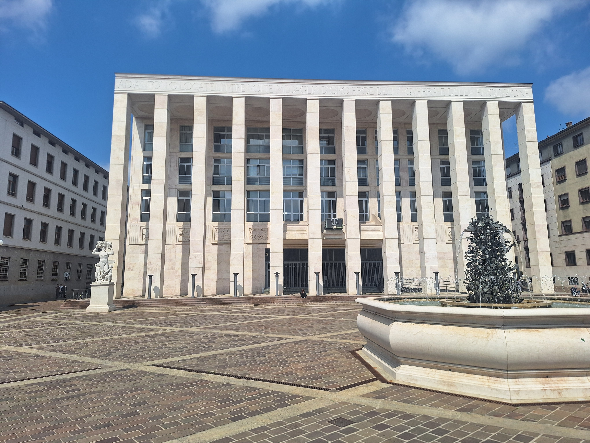
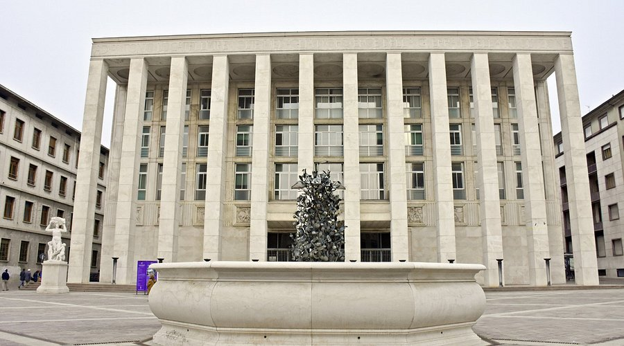

Historical context
The Palace of Freedom, originally called Casa Littoria or Casa del Fascio, was built between 1937 and 1940 to a design by architect Alziro Bergonzo as the headquarters of the National Fascist Party in Bergamo. The building was conceived within the broader urban policy of the Fascist regime, which aimed to redefine the image of the modern city through monumental, celebratory, and highly symbolic architecture capable of visually representing state power.
For the construction of the new monumental square, then called Piazza della Rivoluzione (today Piazza della Libertà), the ancient San Marco Hospital, dating back to the 15th century, was demolished between 1934 and 1935. The new urban layout radically transformed the center of Lower Bergamo, creating a scenic space designed to highlight the palace as the political and symbolic core of the Fascist city.
Bergonzo's project won a competition announced in 1936, whose jury included Marcello Piacentini, a central figure in the regime's official architecture and author of the nearby Centro Piacentiniano. The square in front of the building was solemnly opened on 28 October 1939, the anniversary of the March on Rome, in a clear intertwining of architecture, propaganda, and celebration of the regime; an inaugural visit by Benito Mussolini was planned but never took place.
The palace was dedicated to Antonio Locatelli, an aviator celebrated by Fascist propaganda as a war hero, also commemorated by a monumental inscription on the facade. After the fall of Fascism and the Liberation, the building passed to the State Property Agency and was renamed the Palace of Freedom, symbolically marking the transition from dictatorship to republican democracy. During the postwar period it was converted to house offices, public bodies, and democratic associations; since 2017 the Municipality of Bergamo has used some ground-floor spaces for institutional and cultural activities.
🎧 Audio Reading
Why it is a place of memory
The Palace of Freedom is a place of layered memory because it preserves material and symbolic traces of different phases of 20th-century Italian history. During the Fascist period it represented the regime's "House": a space of propaganda, political control, and organization of civil life, consistent with a totalitarian ideology that sought to occupy every sphere of citizens' existence.
The monumental architecture, celebratory inscriptions, and decorative apparatus show how the regime used art and urban planning to build consensus and shape collective memory. The dedication to Antonio Locatelli, described as "three times gold medal," and the presence of ritual spaces such as the shrine and the assembly hall reinforced the symbolic and almost sacred dimension of political power.
During the final phase of the Second World War and the Italian Social Republic, the building's basement was also used as a place of detention; after 25 April 1945 it temporarily hosted the local headquarters of the National Liberation Committee. The change of name and function in the postwar period did not erase the material traces of the past, but reversed their meaning: from a symbol of oppression to a sign of the democratic reappropriation of the spaces of power.
Today the palace invites a critical reflection on the relationship between architecture, power, and memory, showing how places are never neutral but carry political and civic values that can be reinterpreted over time.
🎧 Audio Reading
Multimedia content


In depth: architectural notes
The Palace of Freedom is a significant example of monumental rationalist architecture from the 1930s. The building has an almost square plan, with facades about 50 meters wide and a height of about 21 meters, and is entirely clad in white-pink Zandobbio marble, a local material that enhances its monumentality and solemnity.
The main facade, facing Piazza della Libertà, is dominated by an imposing portico with twelve giant-order pillars, creating a strong scenic effect and turning the building into an urban backdrop. Above the portico runs a balcony, originally conceived as a space for public speeches and rallies, a typical element of Fascist political architecture.
Bergonzo designed not only the architectural layout but also the organization of the interior spaces, planned from the beginning for precise functions: the Federale's offices, the political secretariat, the assembly hall (today an auditorium), the shrine, and representative rooms. The interior decoration involved numerous artists active in the Italian scene of the time. Sculptures were contributed by Leone Lodi, Nino Galizzi and Edoardo Villa, author of the six bas-reliefs on the monumental staircase dedicated to figures and moments from Bergamo's history. Paintings were created by Contardo Barbieri, Arnaldo Carpanetti, Gianfilippo Usellini and Domenico Rossi.
Of particular importance is the fresco Heroic Life of Antonio Locatelli (1940) by Antonio Giuseppe Santagata, placed in the monumental atrium, an emblematic example of Fascist celebratory painting. The building interacts closely with the square in front of it, designed to exalt its symbolic role, also in relation to Claudio Nani's octagonal fountain and the statue The Gifts of the Earth (1999) by Elia Ajolfi, which testify to the continuity and transformation of the urban space over time.
🎧 Audio Reading
In depth: protection and cultural value
The Palace of Freedom is protected as a property of historical and artistic interest, a recognition that confirms its importance not only architecturally but also historically and culturally. Today it represents a material testimony of the Fascist period and, at the same time, an example of democratic reappropriation of a symbolic place of power, making it a fundamental space for collective memory and civic education for future generations.
🎧 Audio Reading
Sources
- Municipality of Bergamo: records on historic buildings and 20th-century architectural heritage.
- Lombardia Beni Culturali: Palace of Freedom (former Casa del Fascio).
- Historical Archive of the Municipality of Bergamo: documentation on the Case del Fascio and public buildings of the Fascist period.
- Studies on Lombard rationalist architecture (1930s).
- Palace of Freedom of Bergamo: Consulted for historical, architectural and artistic information on the building. [visitbergamo.net]